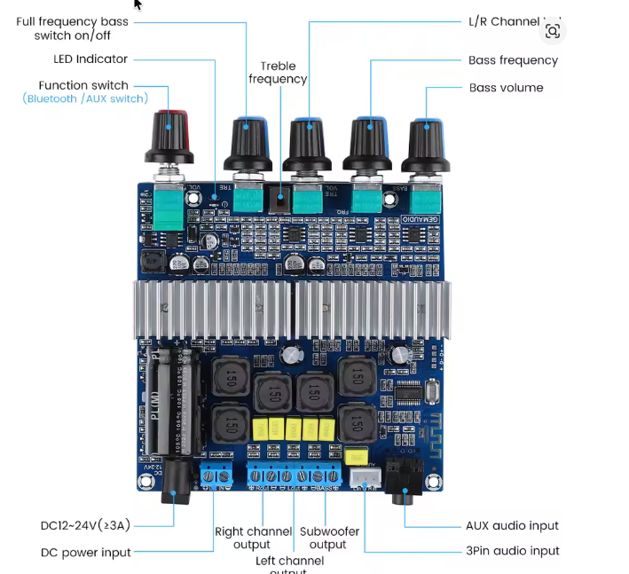

Systemet
| Del | Kabinet | Rolle |
|---|---|---|
| 12" Monacor SP-302E | 76 L lukket | Bas / punch |
| 2×8" Monacor SP-202E | 12 L lukket | Upper bass / mellemtone |
| Monacor MPT-55 piezo | 0.68 µF serie-kondensator | Diskant / attack |
Grundidé
Målet er ikke maksimal bas. Målet er stram bas, tydelig vokal og kontrolleret diskant. 12" enheden skal arbejde omkring 75-85 Hz, mens 8" enhederne tager resten.
AIYIMA TPA3116 board

BASSBasniveau. Sæt lavt først.
BASS FQRSub/bas deling. Start omkring 80 Hz.
TRE VOLHvor meget diskant. MPT-55 kræver forsigtighed.
TREHvor langt ned diskanten/presence arbejder.
VOLMaster volume.
SwitchStart ON, hvis den high-passer 8" enhederne.
Startindstilling
SwitchON
BASS FQR75-85 Hz
BASSLav til middel
TRE VOLLav
TRELav til middel
Lydfiler til tuning
Afspil én fil ad gangen. Justér småt. Lyt både tæt på og 3-5 meter væk.
BASS FQR
80 Hz bør være det mest naturlige kompromis. 70 Hz er strammere. 90-100 Hz giver mere punch, men kan blive boomy eller lokaliserbar.
TRE / TRE VOL
Brug white noise til TRE VOL. Skru op til det bliver skarpt, og gå lidt tilbage. MPT-55 kan hurtigt lyde hård, især hvis TRE arbejder for langt ned i presenceområdet.
Tuning-procedure
- Sæt switch ON.
- Sæt BASS lavt og BASS FQR omkring 80 Hz.
- Afspil 70, 80, 90 og 100 Hz. Find punktet hvor bassen lyder stram uden at blive lokaliserbar.
- Spil musik med kick drum og vokal. Hæv BASS indtil bassen lige kobler på.
- Afspil white noise. Hæv TRE VOL indtil toppen bliver skarp, og skru lidt ned igen.
- Justér TRE lavt/midt. Hvis vokal bliver nasal eller hård, er TRE for højt.
- Lyt 3-5 meter væk. Det er dér boomboxen skal vurderes.
Reglen
Hvis det lyder imponerende alene på bassen eller diskanten, er det sandsynligvis sat for højt. Det rigtige setup lyder balanceret, kontant og mindre trættende over tid.